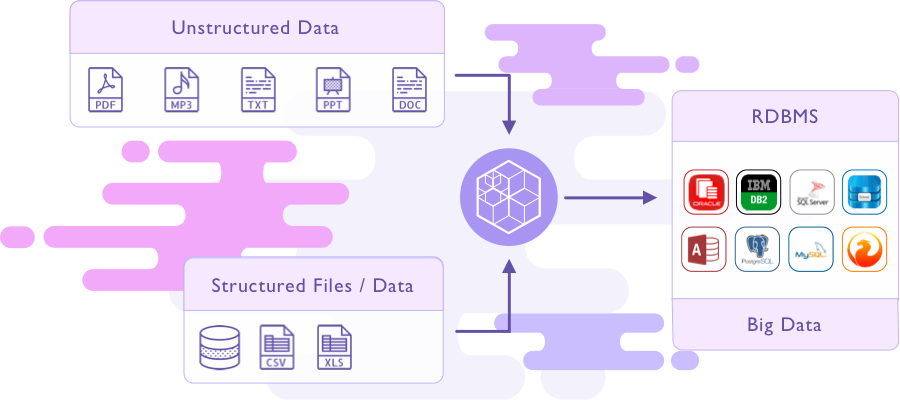
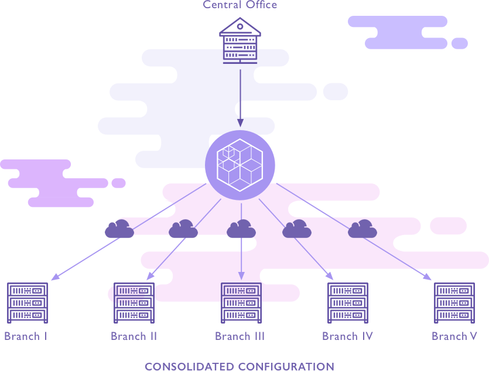

Synchro adalah solusi handal untuk memenuhi kebutuhan konsolidasi, distribusi dan integrasi data secara efektif dan efi sien. Synchro merupakan inovasi baru yang menggabungkan fungsi konsolidasi, distribusi dan integrasi data menjadi satu set sistem yang terintegrasi secara utuh.
Synchro dapat mengkonsolidasikan data dari berbagai macam database ke satu macam database dan mendistribusikan data dari satu macam database ke berbagai macam database. Synchro dapat berfungsi sebagai ETL Tools untuk mengintegrasikan berbagai macam sumber data (database & File Terstruktur) ke satu atau lebih datawarehouse.
Synchro dapat mengkonsolidasikan data secara berjenjang/bertingkat (kantor cabang → kantor regional → kantor pusat) dengan konfi gurasi sistem yang sangat sederhana.
Fitur Synchro
- Fleksibilitas akses database & File System
- Transformasi antar Database
- Enkripsi RSA 10244096 bitkey
- Optimalisasi bandwidth komunikasi data
- Beroperasi pada WAN (publik / private)
- Penjadwalan dan Auto Resume
- Fungsi Remote
- Manajemen terpusat
- Kontrol dan pelaporan berbasis Web
Koneksi ke Database Synchro
- Oracle database
- Microsoft sql server
- IBM DB2
- Sybase
- Postgresql
- Mysql
- Dbase
- Firebird
- Foxpro
- Foxbase
- Microsoft access
- Micorosft excel
- Flat fi le (txt,csv)
Arsitektur Synchro
- Synchro Master dan Synchro Agent terhubung melalui WAN/LAN
- Synchro master dan Synchro Agent berinteraksi melalui jalur yang terenkripsi
- Database driver mengakses database di lingkungan masing – masing
- File access protocol driver mengakses fi le dilingkungan masing - masing
- User mengelola synchro melalui web interface synchro master
- Database driver di gunakan untuk membangun koneksi dengan database sehingga synchro dapat berinteraksi dengan database. Terdiri dari berbagai driver database yang dapat dapat ditambahkan sesuai dengan ketersedian driver untuk platform java.
- File access protocol drivers, digunakan untuk mengakses, membaca, menulis folder/fi le. Synchro mendukung berbagai macam protocol seperti local fi le, network fi le, ftp, ftps
- Data processing module digunakan untuk mengelola data input/output
- Data serialization module digunakan untuk transformasi dan rekonstruksi data yang dikirim/diterima
- Message queue module, berisi antrian pesan komunikasi antara agent dengan master
- Encryption module di gunakan untuk enkripsi/dekripsi data
- Synchronization module digunakan untuk snkronisasi job dan agent.